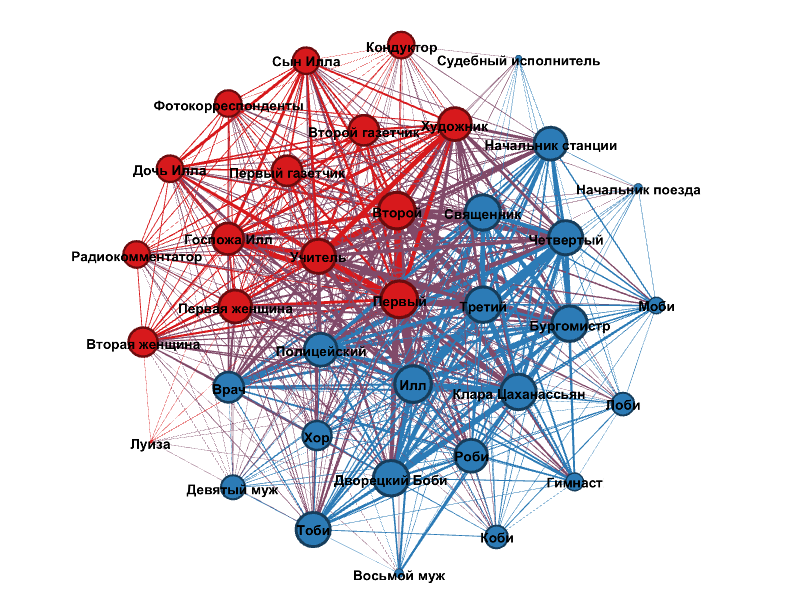
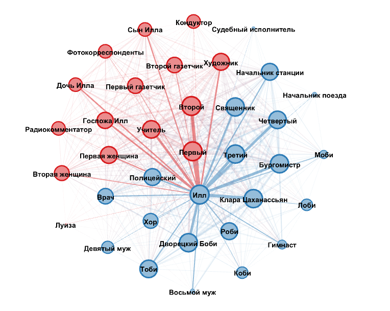

Граф связей между персонажами пьесы Ф. Дюренматта «Визит старой дамы»
Материал
Для построения графа связей между персонажами я выбрала пьесу Фридриха Дюренматта «Визит старой дамы».
Сюжет пьесы состоит в том, что миллионерша Клара Цаханасьян (уже в невполне человеческом обличьи – практически вся она состоит из металлических протезов) приезжает в городок, где выросла, чтобы отомстить своему бывшему возлюбленному Иллу за то, что тот когда-то отказался от их общего ребенка и подкупил суд об отцовстве, из-за чего её с позором выгнали из города. Вернувшись через много лет, она предлагает жителям обедневшего города большие деньги за убийство Илла – изначально предложение было с возмущением отвергнуто, но постепенно все, даже семья Илла, начали привыкать к этой мысли и относиться к его смерти как к неизбежному – надеясь каждый только, что его убьет кто-нибудь другой. В финале пьесы героя убивают вместе все главные лица города – Бургомистр, Полицейский, врач, священник и несколько горожан, хорошо ему знакомых (в пьесе они называются по номерам – первый, второй, третий и четвертый). В произведении содержится аллюзия на древнегреческую «Медею». Ее цитирует единственный человек, кто пытается заставить горожан одуматься, – учитель.
Мне было интересно, как, учитывая сюжет, будет выглядеть граф связей между персонажами. В частности, основываясь на сюжете, я предполагала, что Клара Цаханассьян будет центральным персонажем – как та, которой удается управлять всеми остальными персонажами.
Предобработка материала
Поскольку три действия пьесы не разделены на явления, для построения графа пьеса была размечена. Было принято решение считать началом условной новой части каждое появление или уход со сцены того или иного героя. В некоторых частях пьесы по замыслу автора сцена должна быть разделена на две части, так, что зрителю одновременно видны обе из них, но при этом герои, находящиеся по обе стороны, не взаимодействуют друг с другом. Я предположила, что, раз она заложена в тексте пьесы, эта мизансцена может нести в себе некоторый специальный смысл, и считала их не по отдельности, а как одно явление. Наконец, в ремарках содержалось специальное указание, что в пародии на романтическую сцену в парке помимо Клары Цаханассьян и Илла должны присутствовавать четверо горожан, изображающих деревья. Их тоже было решено учитывать как персонажей, задействованных в сцене.
screenshot
screenshot